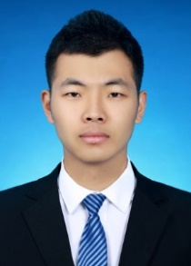

01
增强型打印陶瓷结构
通过流场诱导纤维定向排布，并结合先驱体浸渍裂解工艺提升打印陶瓷基材料的致密度、强度与韧性。
- 纤维定向
- PIP 致密化
- 构效设计
吉林大学 · 副教授
让材料能够打印、重构，并感知。
聚焦陶瓷增材制造与聚合物先驱体陶瓷，开展纤维增强陶瓷结构、功能 SiCN/SiBCN 陶瓷及面向传感与驱动的响应结构研究。

AM / PDC / 4D
01 / 简介
陈思尧，吉林大学机械与航空航天工程学院副教授。研究将光固化、形状记忆聚合物化学与裂解转化相结合，构筑轻质、复杂构型与功能化陶瓷结构。
研究工作覆盖纤维增强 3D 打印陶瓷基材料、可重构陶瓷先驱体、自展开结构，以及用于传感的半导体聚合物先驱体陶瓷。
02 / 研究
01
通过流场诱导纤维定向排布，并结合先驱体浸渍裂解工艺提升打印陶瓷基材料的致密度、强度与韧性。
02
以光固化增材制造 SiCN 与 SiBCN 陶瓷，建立组成、游离碳演变与导电、热敏及压阻响应之间的联系。
03
结合打印材料、导电通路与结构力学，开发自展开结构及面向传感、驱动的智能材料系统。
研究亮点
“
当前工作通过流场剪切诱导碳纤维定向，并采用先驱体浸渍裂解实现陶瓷结构致密化；与未经优化的对照组相比，报道的弯曲强度与断裂韧性分别提高 413% 和 376%。
03 / 论文
04 / 经历
2026 — 至今
吉林大学机械与航空航天工程学院
2024 — 2026
香港城市大学机械工程学院
2019 — 2024
香港城市大学机械工程
2017 — 2018
中国航天科技集团第十一研究院
2015 — 2017
哈尔滨工业大学航天工程与力学系
2011 — 2015
哈尔滨工业大学航天工程与力学系
学术服务
担任 Additive Manufacturing Frontiers 青年编委、Frontiers in Electronics 特邀编辑，并为 Aerospace Science and Technology、Journal of the European Ceramic Society 等期刊审稿。